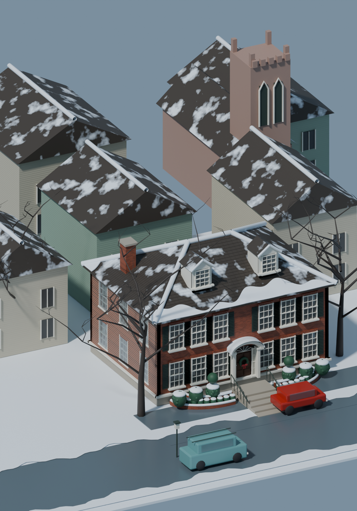

BLACKMAMBA
ARCHITECTURAL ENGINE
v0.2 · Reconstrucción conceptual a partir de dos ilustraciones de invierno. Casa editable, árboles, nieve, luces y contexto del cartel. Frente 14.4 m, fondo 10.8 m, cumbrera +10 m: todas las medidas son hipótesis. Interiores y fachadas ocultas no verificables. Sin certificación para obra.

Plantas, alzados y secciones
Láminas vectoriales: abrir cada una para ampliar o imprimir. Las barras gráficas mantienen la referencia al cambiar el tamaño de impresión.